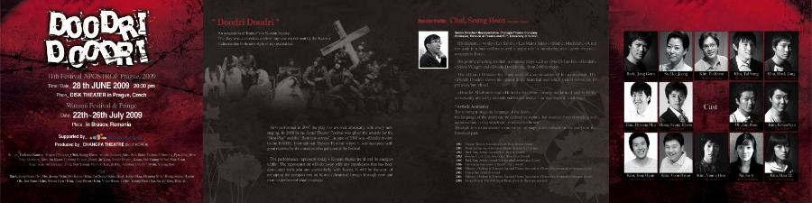
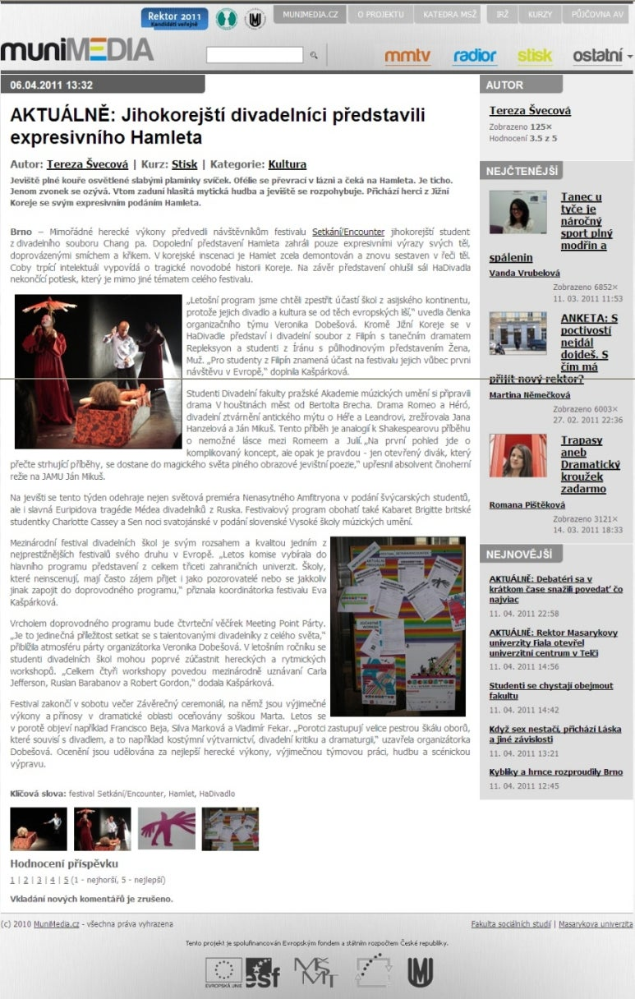
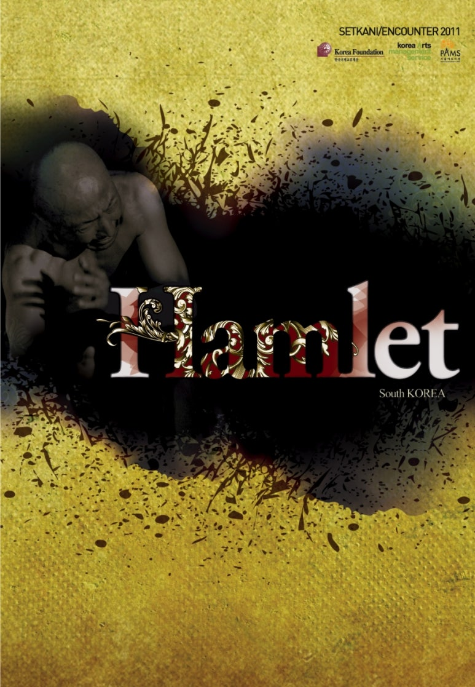
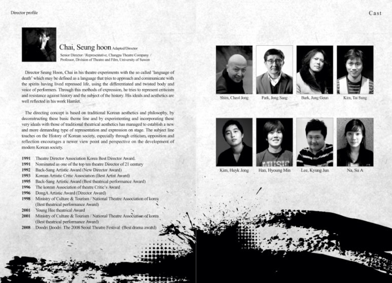
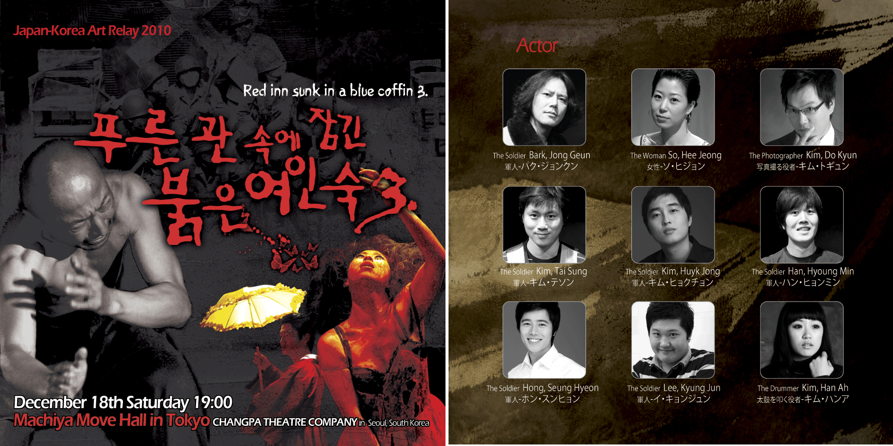

World archive
해외 초청 공연
창파의 무대가 세계 다섯 도시의 국제 페스티벌에서 펼쳐진 기록을 모읍니다.
01 · 2009
두드리두드리
DOODRI DOODRI
- Prague, Czech 14th Festival XPOS-MOCI · 2009. 6. 28 · DSK Theater
- Brasov, Romania Wanrara Festival & Fringe · 2009. 7. 22–26



02 · 2011
Hamlet
SETKANI / ENCOUNTER 2011
- Brno, Czech Setkání/Encounter 국제 학생 연극 페스티벌 · 2011
- Warsaw, Poland 바르샤바 국제 페스티벌 · 2011



03 · 2010
푸른관속에
붉은 여인숙3
RED INN IN A BLUE COFFIN 3
- Japan 한일아트릴레이 in Japan · 2010
